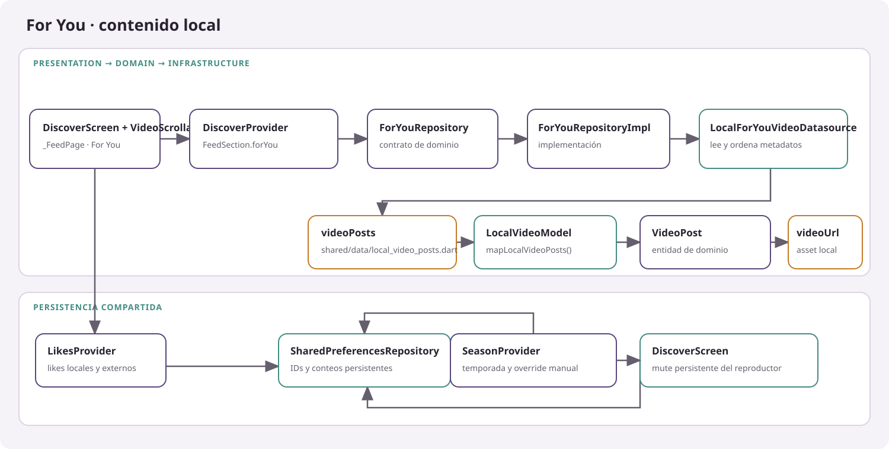
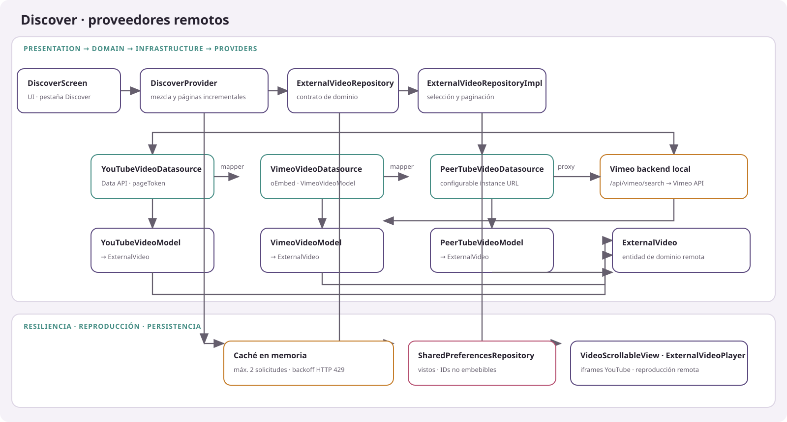

Presentation
DiscoverScreen, widgets de feed y reproductores, DiscoverProvider, LikesProvider y providers de temporada.
Práctica 04 · Flutter
Explora por separado el feed de videos locales y la búsqueda externa. Los diagramas muestran los providers, contratos, implementaciones y datasources conectados en el código.
Práctica 04 · TokTik
TokTik es una aplicación Flutter de videos cortos con navegación vertical. For You reproduce clips locales; Discover reúne videos remotos de YouTube, Vimeo y PeerTube; Favorites muestra publicaciones marcadas con Me gusta. La interfaz conserva mute, permite pausar o reanudar con un toque y expande descripciones largas con «… más».
El código actual utiliza DiscoverProvider para administrar todas las secciones, también For You. No hay una clase ForYouProvider ni una clase llamada LocalVideoDatasource: sus equivalentes concretos son ForYouRepositoryImpl y LocalForYouVideoDatasource.

lib/shared/data/local_video_posts.dart en entidades VideoPost. Cada videoUrl apunta a un asset de assets/videos/.flowchart LR
UI["DiscoverScreen · _FeedPage · For You"] --> State["DiscoverProvider · FeedSection.forYou"]
State --> Contract["ForYouRepository · domain"]
Contract --> Repo["ForYouRepositoryImpl"]
Repo --> Source["LocalForYouVideoDatasource"]
Source --> Data["videoPosts · local_video_posts.dart"]
Data --> Mapper["LocalVideoModel · mapLocalVideoPosts()"]
Mapper --> Entity["VideoPost · domain entity"]
Data --> Assets["videoUrl · assets/videos/*.mp4"]
UI --> Likes["LikesProvider"]
Likes --> Prefs["SharedPreferencesRepository · likes"]
UI --> Prefs
Season["SeasonProvider · theme override"] --> Prefs
Los proveedores externos producen entidades ExternalVideo, no VideoPost. DiscoverProvider tolera fallos por fuente, intercala resultados, pagina al acercarse al final y usa una caché en memoria, un máximo de dos solicitudes simultáneas y espera incremental ante HTTP 429. Los IDs vistos y los videos de YouTube no embebibles se guardan en preferencias locales.

BACKEND_BASE_URL/api/vimeo/search cuando hay backend configurado; PeerTube usa una URL de instancia configurable.flowchart LR
UI["DiscoverScreen · Discover"] --> State["DiscoverProvider · shuffle, paging, source errors"]
State --> Contract["ExternalVideoRepository · domain"]
Contract --> Repo["ExternalVideoRepositoryImpl · source routing"]
Repo --> YT["YouTubeVideoDatasource"]
Repo --> VM["VimeoVideoDatasource"]
Repo --> PT["PeerTubeVideoDatasource"]
YT --> YTM["YouTubeVideoModel"] --> External["ExternalVideo · domain entity"]
VM --> Backend["Vimeo backend · /api/vimeo/search"]
Backend --> VimeoAPI["Vimeo API · /videos"]
VimeoAPI --> VMM["VimeoVideoModel"] --> External
PT --> PTAPI["PeerTube API · /api/v1/videos"]
PTAPI --> PTM["PeerTubeVideoModel"] --> External
State --> Cache["Page cache · max 2 requests · backoff on 429"]
State --> Prefs["SharedPreferencesRepository · seen and blocked IDs"]
State --> Player["VideoScrollableView · ExternalVideoPlayer"]
DiscoverScreen, widgets de feed y reproductores, DiscoverProvider, LikesProvider y providers de temporada.
Entidades VideoPost y ExternalVideo, contratos de repositorio/datasource y excepciones de fuentes externas.
Repositorios concretos, datasources HTTP/locales, modelos y mappers, integración de preferencias y configuración de APIs.
Regla Clean Architecture: las políticas y contratos viven en Domain; Infrastructure implementa esos contratos, y Presentation coordina la UI mediante providers. main.dart conecta las implementaciones concretas. En el código actual, DiscoverScreen lee/escribe mute usando directamente SharedPreferencesRepository; esta dependencia de Presentation hacia Infrastructure se documenta como una excepción existente.
DiscoverProvider — lib/presentation/providers/discover_provider.dartLikesProvider — lib/presentation/providers/likes_provider.dartDiscoverScreen, _FeedPage — lib/presentation/screens/discover/discover_screen.dartVideoScrollableView — lib/presentation/widgets/shared/video_scrollable_view.dartFullScreenPlayer, ExternalVideoPlayer — lib/presentation/widgets/video/VideoPost, ExternalVideo, VideoSource — lib/domain/entities/ForYouRepository — lib/domain/repositories/for_you_repository.dart; implementación en lib/infrastructure/repositories/for_you_repository_impl.dartLocalForYouVideoDatasource, mapLocalVideoPosts, LocalVideoModel — lib/infrastructure/datasources/for_you_video_datasource_impl.dart, lib/infrastructure/datasources/local_video_posts_mapper.dart, lib/infrastructure/models/local_video_model.dartExternalVideoRepository, PaginatedExternalVideoRepository — lib/domain/repositories/external_video_repository.dartExternalVideoRepositoryImpl — lib/infrastructure/repositories/external_video_repository_impl.dartYouTubeVideoDatasource, VimeoVideoDatasource, PeerTubeVideoDatasource — lib/infrastructure/datasources/YouTubeVideoModel, VimeoVideoModel, PeerTubeVideoModel — lib/infrastructure/models/SharedPreferencesRepository — lib/infrastructure/repositories/shared_preferences_repository.dartSeasonProvider, SeasonalAudioProvider, Season — lib/presentation/providers/ y lib/domain/entities/season.dartVimeo backend — Practica04/vimeo_backend/server.js